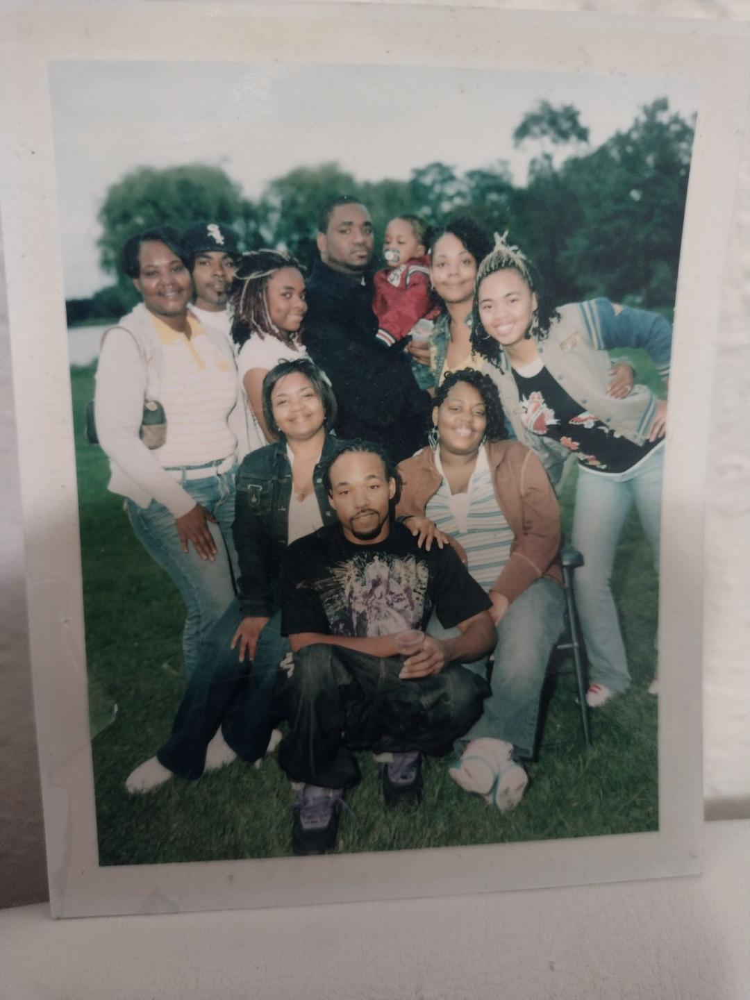
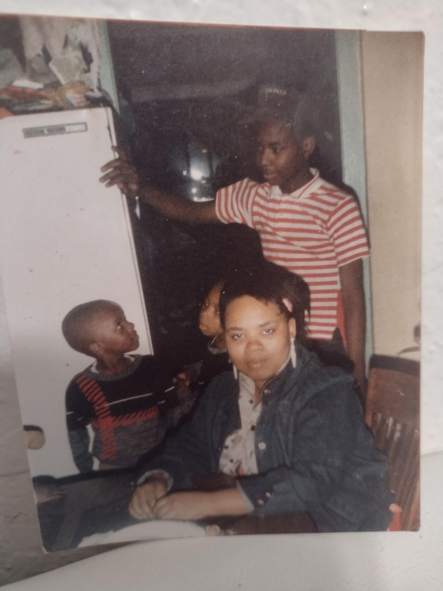
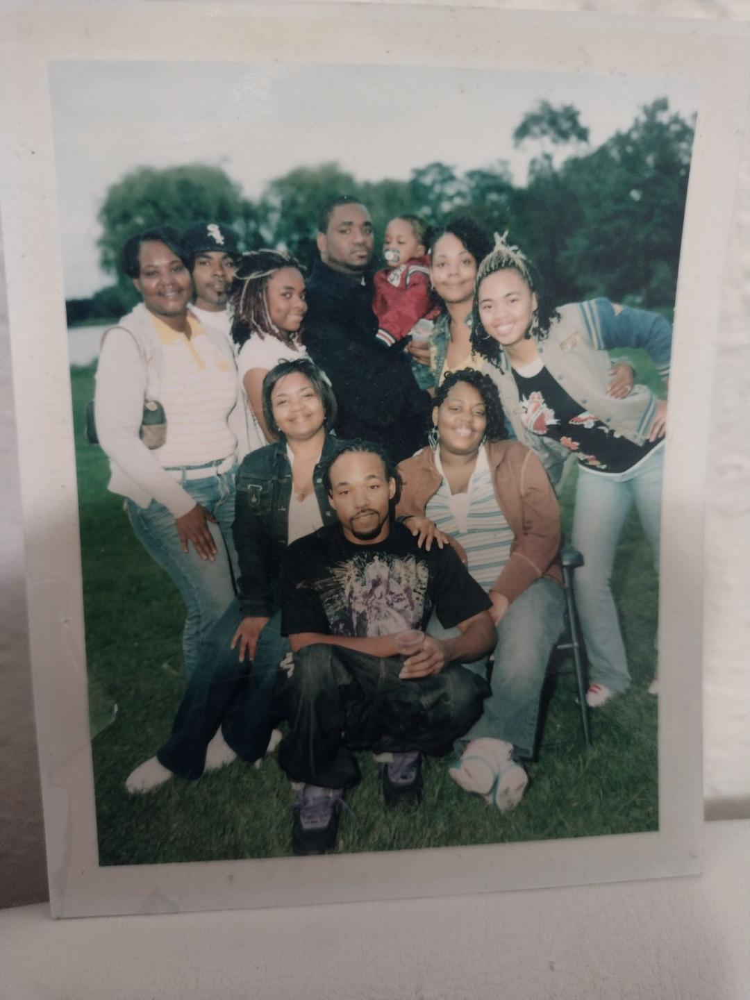
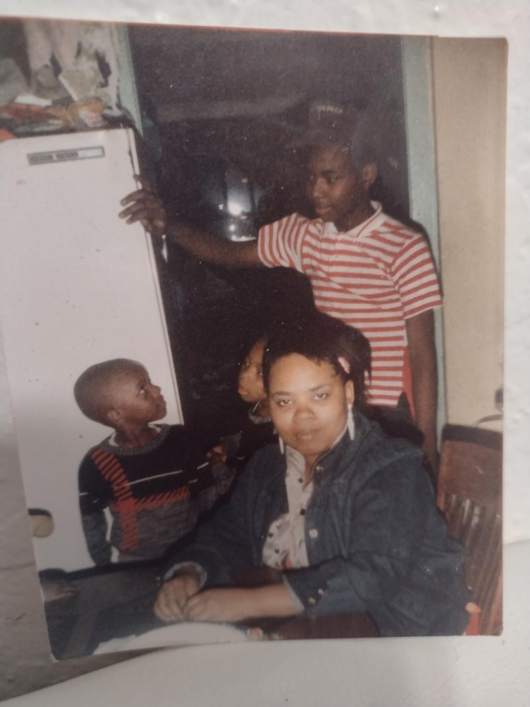

Olivia's Hobbies
- Being Around Family
- Cooking Big Meals
- Loves To Garden
In her well-deserved free time, Olivia finds solace and tranquility in the simple pleasure of sitting in her yard on a hot summer day. This serene and reflective moment is a testament to her gentle and peaceful nature, as well as her ability to find contentment and joy in life's simple pleasures. Her love for nature, her selfless dedication to fostering children, and her unwavering support for her family and community are all testaments to the remarkable person she is. Olivia's impact resonates deeply and her influence is far-reaching, demonstrating the beauty of unwavering care, kindness, and the importance of devoting oneself to the well-being of others. It comes as no surprise that those fortunate enough to know her are deeply grateful and inspired, and those she has nurtured count themselves as truly blessed.
Olivia is deeply passionate about cooking, especially for her large family and the community around her. Her love for creating delicious and comforting meals is evident in the way she meticulously plans each dish, taking into consideration the various dietary preferences and requirements of her loved ones. Whether it's a traditional family gathering or a community event, Olivia takes great joy in preparing meals that bring people together. She finds immense satisfaction in seeing the smiles on the faces of her family members and neighbors as they savor her homemade dishes. For Olivia, cooking is not merely a task, but a way to express her love and care for those around her. She often experiments with new recipes and takes the time to perfect her cooking techniques, always aiming to exceed the expectations of her family and community. With her warm and welcoming nature, Olivia's kitchen is often the heart of gatherings, filled with the comforting aromas of home-cooked meals and the sound of laughter and lively conversations. She uses her culinary skills to not only nourish her loved ones but also to foster a sense of togetherness and belonging within her community. Olivia's dedication to cooking for her big family and community is a testament to her selflessness and the importance she places on creating memorable experiences through the universal language of food.
Olivia has always been a firm believer in the idea of growing your own food, and she has taken this belief to heart by cultivating a vibrant and bountiful garden to provide fresh produce for her family and community. With a deep appreciation for the earth's natural resources, Olivia has dedicated herself to the art of gardening, carefully tending to her plants with love and attention. She finds joy in nurturing a variety of vegetables, fruits, and herbs, knowing that each harvest is not only a source of nourishment but also a way to connect with the land and promote sustainability. Sharing her homegrown produce with her family and neighbors has become a cherished tradition, as Olivia takes pride in offering the freshest and most flavorful ingredients possible. Her garden has become a symbol of her commitment to providing wholesome, locally sourced food, and she hopes to inspire others to embrace the beauty and benefits of gardening for their own well-being and the well-being of the community.
 


